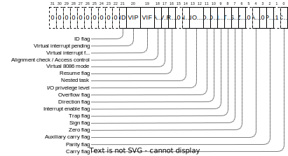

A register is a quickly accessible memory region reserved for fast read-write operations for the processor while executing code. Some registers may have purpose of fast-access variables, while others may have specific hardware functions, may be read/write only, etc.
These are registers that are used most frequently. The processor uses them to store values, addresses, syscall indexes or function parameters when calling a function. Size of these register differs on processor architecture. Following are the GPR for 32-bit architecture:
EAX - Accumulator register
EBX - Base register
ECX - Counter register
EDX - Data register
As you may already know, on a 32-bit architecture, these registers are equivalent to 4-byte (32-bit) C integers, meaning they can be treated the same way. These 32-bit registers can be then each divided into 16-bit registers.
AX BX CX DX
As you can see, the only difference is that the letter E is missing. Same abbreviation changes are made to the 64-bit architecture GPRs.
Third division may also happen by dividing these 16-bit registers into 8-bit parts. Changes in the naming are made by changing the suffix X to either L, refering to the lower four bits of the register, or H, refering to the higher four bits.
AH AL, BH BL, CH CL, DH DL
Registers used as indexes for example with string operations.
EDI - Destinaion index
ESI - Source index
Also known as program counter, is a register that holds a pointer to address of current instruction being executed by the processor. Explicitly called program counter, because processor executes instructions in a sequence, one by one, so the EIP register basically increments itself, unless there's a jump to another program location or a function call.
EIP
Registers that are taking care of the stack. So called stack frame is basically a set of data that informs about the stack being used throughout each function call. Basically, when a function is called, a new stack is created. The stack contains all temporary variables, function call arguments or return addresses. However, when the function calls another function, another stack has to be created, and so on. The data stored about each function stack is called a stack frame.
Using a stack frame we can also trace down the function call history. There comes the two registers, ESP and EBP. When a new function is created, the function saves the old base pointer for current stack frame, also called frame pointer, updates the old base pointer to the top of the stack and subtracts N bytes from the stack, depending on the stack size used within the function. The amount of bytes subtracted is hardcoded by the compiler. Eventually if the function returns, the old base pointer is set to the saved one. If this seems complicated, I'll demonstrate in a minute.
; first function to be called
func:
push ebp ; saves the old base pointer. (also called frame pointer)
mov ebp, esp ; update the old base pointer to point to the top of the stack.
sub esp, 8 ; subtracts 8 bytes out of the stack pointer. (8 byte variable or two 4 bytes variables)
...
mov esp, ebp ; restore the old stack frame
pop ebp ; remove from the stack
This register alone acts as a bit field holding many processor states, each being one or two bits in size. It is modified by many instructions and each bit represents some imaginary flag to inform the processor about current computing state. Some of the flags are for example zero flag, which is set when dividing by zero or interrupt enable which enables interrupts for the processor.
| Bit | Abbreviation | Description |
|---|---|---|
| 0 | CF | Carry flag. Set when an arithmetic carry or borrow has been generated out of the most significant arithmetic logic unit (ALU) bit position. |
| 2 | PF | Parity flag. Indicates if the numbers of set bits is odd or even in the binary representation of the result of the last operation. |
| 4 | AF | Auxilliary/Adjust flag. Set when an arithmetic carry or borrow has been generated out of bit 3 of the result. This flag is used in binary-coded decimal (BDC) arithmetic. |
| 6 | ZF | Zero flag. Set if the result of last arithmetic operation was zero. |
| 7 | SF | Sign flag. Set equal to the most significant bit of an integer, indicating if it's a signed or unsigned type, from the last mathematical operation. |
| 8 | TF | Trap. This flag enables processor to perform single-step operations. That is, when debugging a process. |
| 9 | IF | Interrupt flag. Enables processor interrupts. If enable, processor will instaneosly react to maskable hardware interrupts |
| 10 | DF | Direction flag. Controls the left-to-right or right-to-left direction of string processing. |
| 11 | OF | Overflow flag. Indicates whenether last arithmetic operation resulted in an overflow. |
| 12-13 | OIPL | I/O privilege flag. Indicates whenether the current instruction executed by the processor is in privilege ring 0/1/2/3. |
Memory segmentation is an implementation of dividing memory space of a program to specific segments. These segments are usually either code segment, data segment, stack segment or additional segment registers such as far pointers, etc...
CS - Holds a pointer to code segment where the program execute instructions.
DS - Holds a pointer to data segment where the program stores data.
ES, FS, GS - Extra segment registers. Usually used as far pointers pointing to memory regions such as video memory and such.
SS - Holds a pointer to stack segment.